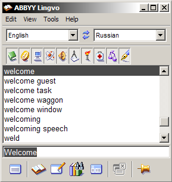

Lingvo 8.0
Замечания
Версия программы выпущена в 2002 году.
Впервые расширен спектр языковых направлений: помимо английского и русского вводятся в обиход немецкий, французский и итальянский языки.
Введены в использование новые, действующие по сей день, директивы предварительной обработки. При компиляции DSL, созданных для предыдущих версий, справочное руководство предписывает добавлять в начало файла «шапку» из трёх обязательных директив #NAME, #INDEX_LANGUAGE и #CONTENTS_LANGUAGE. Там же упоминается директива #SOURCE_CODE_PAGE. Перестают действовать две директивы, употреблявшиеся в версиях с 6.0 по 7.0.
Введен в использование новый тэг lang с атрибутами id и name. В качестве идентификаторов для атрибута id используются порядковые номера с 1 по 26.
Тэг [c] пополнился новой возможностью употребления значений, в качестве которых используются ключевые слова цветов по спецификации HTML. Теперь непосредственно в DSL можно указывать цвет выделяемого текста.
Однако, базовая форма тэга [c] продолжает сохранять своё значение. Цвет для неё указывается в диалоге настроек и пометы продолжают выделяться тремя тэгами [c][i][p].
Тэг [s] пополнился возможностью отображения видео в формате *.avi.
Вводятся в употребление новые тэги:
- ссылка на статью в другом словаре [ref], со значением и без;
- надстрочный текст [sup];
- подстрочный текст [sub].
Впервые в официальном справочном руководстве сообщается о возможности прикрепления к пользовательским словарям аннотаций и иконок. Приводятся их технические характеристики.
Впервые упоминается о недопустимости «вложения зон индексации и команд форматирования текста одного типа».
Пользовательский словарь аббревиатур более не нужно переименовывать в abbrev.tip, а можно располагать его в программном каталоге с именем abbrev.lsd. По прежнему предусматривается только один словарь аббревиатур для всех пользовательских словарей.
Внешний вид
Вид основного окна программы.

Вид словарной карточки.
Вкладка «Формат» в диалоге настроек программы.
Вид окна компилятора пользовательских словарей.

Состав словарей
Англо-русские и русско-английские словари
| № | Наименование | Автор, издание | Объём |
|---|---|---|---|
| 1. | LingvoUniversal (En-Ru) Англо-русский словарь общей лексики. The Universal English-Russian Dictionary. | 4-е изд., исправленное и дополненное. © ABBYY Software House, 2002. | 100 тыс. статей. |
| 2. | LingvoUniversal (Ru-En) Русско-английский словарь общей лексики. The Universal Russian-English Dictionary. | 5-е изд., исправленное и дополненное. © ABBYY Software House, 2001. | 85 тыс. статей. |
| 3. | LingvoEconomics (En-Ru) Англо-русский экономический словарь. The English-Russian Dictionary of Economics. | 5-е изд., переработанное и дополненное. © ABBYY Software House, 2001. | 50 тыс. статей. |
| 4. | LingvoEconomics (Ru-En) Русско-английский индекс к Англо-русскому экономическому словарю. The Russian-English Index for the English-Russian Dictionary of Economics. | © ABBYY Software House, 2001. | 35 тыс. статей. |
| 5. | LingvoComputer (En-Ru) Англо-русский словарь по вычислительной технике и программированию. The English-Russian Dictionary of Computer Science. | 4-е изд., исправленное и дополненное. © ABBYY Software House, Масловский Е.К., 2002. | 52 тыс. статей. |
| 6. | LingvoComputer (Ru-En) Русско-английский индекс к Англо-русскому словарю по вычислительной технике и программированию. The Russian-English Index for the English-Russian Dictionary of Computer Science. | © ABBYY Software House, Масловский Е.К., 2002. | 36 тыс. статей. |
| 7. | LingvoScience (En-Ru) Англо-русский научно-технический словарь. The English-Russian Scientific Dictionary. | 3-е изд., переработанное. © ABBYY Software House, 2001. | 150 тыс. статей. |
| 8. | LingvoScience (Ru-En) Русско-английский индекс к Англо-русскому научно-техническому словарю. The Russian-English Index for the English-Russian Scientific Dictionary. | © ABBYY Software House, 2001. | 145 тыс. статей. |
| 9. | LingvoSound (En-Ru) Краткий англо-русский озвученный словарь. The Concise English-Russian Sound Dictionary. | 3-е изд. © ABBYY Software House, 2001. | 5 тыс. статей. |
| 10. | Polytechnic (En-Ru) Большой англо-русский политехнический словарь. The Comprehensive English-Russian Scientific and Technical Dictionary. | 2-е изд., стереотипное. © РУССО, 1997. | 200 тыс. статей. |
| 11. | Polytechnic (Ru-En) Русско-английский индекс к Англо-русскому политехническому словарю. The Russian-English Index for the Comprehensive English-Russian Scientific and Technical Dictionary. Индекс к Polytechnic (En-Ru). | © РУССО, 1997. | 125 тыс. статей. |
| 12. | OilAndGas (En-Ru) Большой англо-русский словарь по нефти и газу. The English-Russian Dictionary of Oil and Gas. | © ВНИИГАЗ, РАО «Газпром», 1998. | 52 тыс. статей. |
| 13. | OilAndGas (Ru-En) Русско-английский индекс к Большому англо-русскому словарю по нефти и газу. The Russian-English Index for the English-Russian Dictionary of Oil and Gas. | © ВНИИГАЗ, РАО «Газпром», 1998. | 35 тыс. статей. |
| 14. | Medical (En-Ru) Англо-русский индекс к Большому русско-английскому медицинскому словарю. The English-Russian Index for the Comprehensive Russian-English Medical Dictionary. | © «РУССО», 2000, Бенюмович М.С., Ривкин В.П. и др. | |
| 15. | Medical (Ru-En) Большой русско-английский медицинский словарь. The Comprehensive Russian-English Medical Dictionary. | © «РУССО», 2000, Бенюмович М.С., Ривкин В.П. и др. | 70 тыс. статей. |
| 16. | Law (En-Ru) Англо-русский юридический словарь. The English-Russian Law Dictionary. | © «РУССО», 1998, Андрианов С.Н., Берсон А.С., Никифоров А.С. | 50 тыс. статей. |
| 17. | Law (Ru-En) Русско-английский индекс к Англо-русскому юридическому словарю. The Russian-English Index for the English-Russian Law Dictionary. | © «РУССО», 1998, Андрианов С.Н., Берсон А.С., Никифоров А.С. | 20 тыс. статей. |
| 18. | LingvoGrammatical (En-Ru) Англо-русский грамматический словарь. The English-Russian Grammatical Dictionary. | © ABBYY Software House, 2002. | Около 500 грамматических статей. |
Русские словари
| № | Наименование | Автор, издание | Объём |
|---|---|---|---|
| 1. | LingvoThesaurus (Ru-Ru) Тезаурус русской деловой лексики. The Thesaurus of Russian Business Words. | 3-е изд. © ABBYY Software House, 2001. | 16 тыс. статей. |
Немецко-русские и русско-немецкие словари
| № | Наименование | Автор, издание | Объём |
|---|---|---|---|
| 1. | Universal (De-Ru) Современный немецко-русский словарь общей лексики. Modernes Deutsch-Russisches Wörterbuch. | 5-ое изд., стереотипное. © Рымашевская Э.Л., 1999. | 60 тыс. статей. |
| 2. | Universal (Ru-De) Современный русско-немецкий словарь общей лексики. Modernes Russisch-Deutsches Wörterbuch. | 5-ое изд., стереотипное. © Рымашевская Э.Л., 1999. | 40 тыс. статей. |
| 3. | Polytechnic (De-Ru) Немецко-русский политехнический словарь. Deutsch-Russisches politechnisches Wörterbuch. | © «РУССО», 1995, Бардышев Г.М., Барон Л.И., Брызгалин Н.Ф. и др. | 110 тыс. статей. |
| 4. | Polytechnic (Ru-De) Русско-немецкий индекс к Немецко-русскому политехническому словарю. Russisch-Deutsch Index für Deutsch-Russisches politechnisches Worterbuch. | © «РУССО», 1995, Бардышев Г.М., Барон Л.И., Брызгалин Н.Ф. и др. | 95 тыс. статей. |
| 5. | Law (De-Ru) Немецко-русский юридический словарь. Deutsch-Russisches juristisches Wörterbuch. | © «РУССО», 1995, с Дополнением /Гришаев П.И., Донская Л.И., Марфинская М.И. и др. | 46 тыс. статей. |
| 6. | Law (Ru-De) Русско-немецкий индекс к Немецко-русскому юридическому словарю. Russisch-Deutsch Index für Deutsch-Russisches juristisches Wörterbuch. | © «РУССО», 1995, с Дополнением /Гришаев П.И., Донская Л.И., Марфинская М.И. и др. | 20 тыс. статей. |
| 7. | Medical (De-Ru) Немецко-русский медицинский словарь. Deutsch-Russisches Wörterbuch der Medizin. | © «РУССО», 1995, Болотина А.Ю., Ганюшина Е.Г., Добровольский В.И. и др. | 55 тыс. статей. |
| 8. | Medical (Ru-De) Русско-немецкий индекс к Немецко-русскому медицинскому словарю. Russisch-Deutsch Index für Deutsch-Russisches Wörterbuch der Medizin. | © «РУССО», 1995, Болотина А.Ю., Ганюшина Е.Г., Добровольский В.И. и др. | 40 тыс. статей. |
| 9. | Chemistry (De-Ru) Немецко-русский словарь по химии и химической технологии. Deutsch-Russisches Wörterbuch der Chemie und chemischen Technologie. | © «РУССО», 2000, Жукова Т.Б., Мельникова М.М., Потапов И.И. и др. | 56 тыс. статей. |
| 10. | Chemistry (Ru-De) Русско-немецкий индекс к немецко-русскому словарю по химии и химической технологии. Russisch-Deutsches Index für Deutsch-Russisches Wörterbuch der Chemie und chemischen Technologie. | © «РУССО», 2000, Жукова Т.Б., Мельникова М.М., Потапов И.И. и др. | 40 тыс. статей. |
| 11. | Economics (De-Ru) Немецко-русский экономический словарь. Deutsch-Russisches ökonomisches Wörterbuch. | © «РУССО», 2001, Куколев Ю.И. | 50 тыс. статей. |
| 12. | Economics (Ru-De) Русско-немецкий индекс к немецко-русскому экономическому словарю. Russisch-Deutsches Index für Deutsch-Russisches ökonomisches Wörterbuch. | © «РУССО», 2001, Куколев Ю.И. | 30 тыс. статей. |
Французско-русские и русско-французские словари
| № | Наименование | Автор, издание | Объём |
|---|---|---|---|
| 1. | Universal (Fr-Ru) Французско-русский словарь по общей лексике. Dictionnaire Français-Russe. | © Раевская О.В., 2001. | 20 тыс. статей. |
| 2. | Universal (Ru-Fr) Русско-французский словарь по общей лексике. Dictionnaire Russe-Français. | © Раевская О.В., 2000. | 15 тыс. статей. |
| 3. | Technical (Fr-Ru) Французско-русский технический словарь. Dictionnaire technique Français-Russe. | © «РУССО», 1995, Болотин А.А., Воропаев Н.Д., Горбунов А.В. И др. | 80 тыс. статей. |
| 4. | Technical (Ru-Fr) Русско-французский индекс к Французско-русскому техническому словарю. L'index Russe-Français du Dictionnaire technique Français-Russe. | © «РУССО», 1995, Болотин А.А., Воропаев Н.Д., Горбунов А.В. и др. | 55 тыс. статей. |
| 5. | Law (Fr-Ru) Французско-русский юридический словарь. Dictionnaire de Droit Français-Russe. | © «РУССО», 1995, Мачковский Г.И. | 35 тыс. статей. |
| 6. | Law (Ru-Fr) Русско-французский индекс к Французско-русскому юридическому словарю. L'index Russe-Français du Dictionnaire de Droit Français-Russe. | © «РУССО», 1995, Мачковский Г.И. | 20 тыс. статей. |
| 7. | Chemistry (Fr-Ru) Французско-русский словарь по химии и химической технологии. Dictionnaire Français-Russe de chimie et de technologie chimique. | © «РУССО», 1999, Альтах О.Л., Беспалов А.Л., Литвинцев И.Ю., Устенко А.А. | 65 тыс. статей. |
| 8. | Chemistry (Ru-Fr) Русско-французский индекс к Французско-русскому словарю по химии и химической технологии. L'index Russe-Français du Dictionnaire Français-Russe de chimie et de technologie chimique. | © «РУССО», 1999, Альтах О.Л., Беспалов А.Л., Литвинцев И.Ю., Устенко А.А. | 55 тыс. статей. |
Итальянско-русские и русско-итальянские словари
| № | Наименование | Автор, издание | Объём |
|---|---|---|---|
| 1. | Polytechnic (It-Ru) Итальянско-русский политехнический словарь. Dizionario Politecnico Italiano-Russo. Индекс к Polytechnic (Ru-It). | © «РУССО», 1997, Авраменко Б.И., Сокольский Ю.А. | 90 тыс. статей. |
| 2. | Polytechnic (Ru-It) Русско-итальянский индекс к Итальянско-русскому политехническому словарю. Indice Russo-Italiano del Dizionario Politecnico Italiano-Russo. | © «РУССО», 1997, Авраменко Б.И., Сокольский Ю.А. | 110 тыс. статей. |